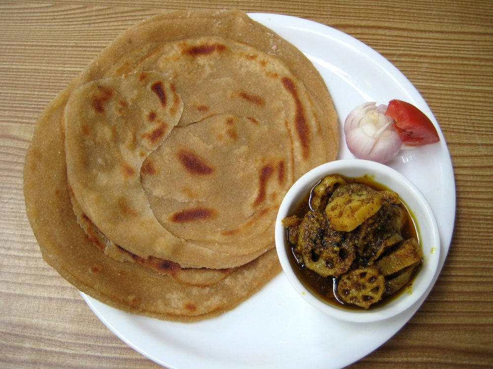

Prep30 min
Cook25 min
Total55 min
Serves6
Difficultymoderate
Contains: milk, gluten
Checked against the ingredient list for ten allergens: milk, egg, fish, crustaceans, tree nuts, peanuts, sesame, mustard, soy and gluten. Brands vary, so read the label on anything new to you.
Ingredients
Quantities for 6.
- 400g Atta
- 80g, melted Gheethe layers are ghee; oil gives fewer and softer ones
- 3 tbsp, for dusting between layers Maida
- 250ml, warm Water
- 1 tsp Salt
Cookware
tawa
Before you start
- The pleating is the whole dish. Roll thin, brush with ghee, dust with flour, pleat like a fan, then coil.
- Rest the dough properly. Under-rested dough springs back and will not roll thin enough to layer.
Method
- Make a soft dough with the flour, salt and warm water. Knead 8 minutes, oil the surface and rest 30 minutes.
- Roll a ball out as thin as you can manage, almost translucent.
- Brush generously with melted ghee and dust with maida.The flour dusting keeps the layers from fusing back together.
- Pleat the sheet like a paper fan, stretch it gently, then coil it into a spiral and tuck the end under. Rest 10 minutes.
- Roll the coil out gently to 18cm, keeping the spiral intact.Gently. Press hard and you crush the layers you just built.
- Cook on a hot tawa with ghee, 2 minutes a side, then crush lightly between your palms to open the layers.
Storage
Best straight off the tawa. They keep a day wrapped in a cloth at room temperature; reheat on a dry tawa, not a microwave.
Nutrition Good estimate
Low protein: 7 g a serving, 8% of the calories
| Per serving88 g | Per 100 g | |
|---|---|---|
| Calories | 365 kcal | 413 kcal |
| Protein | 7.2 g | 8 g |
| Carbohydrate | 55.4 g | 63 g |
| of which sugars | 0.7 g | 1 g |
| Fibre | 8.9 g | 10 g |
| Fat | 14.6 g | 16 g |
| of which saturated | 8.6 g | 10 g |
| of which unsaturated | 5.3 g | 6 g |
Estimated from raw ingredients using USDA FoodData Central.
Written and checked against sources, not cooked in a test kitchen. Times, yields, allergens and nutrition are worked out rather than measured, so use your own judgement on doneness and on storing. More in About.